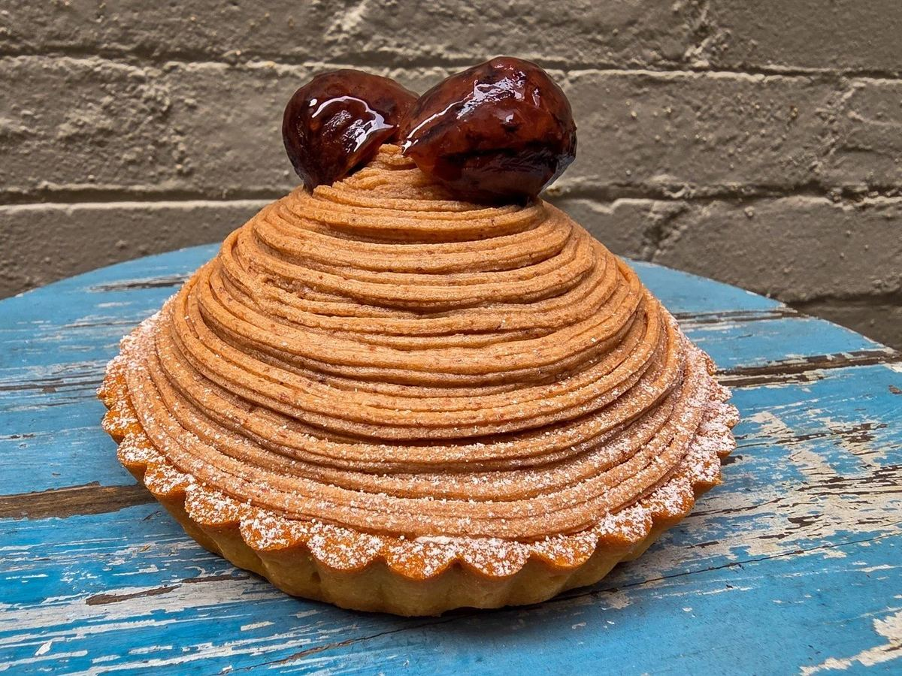
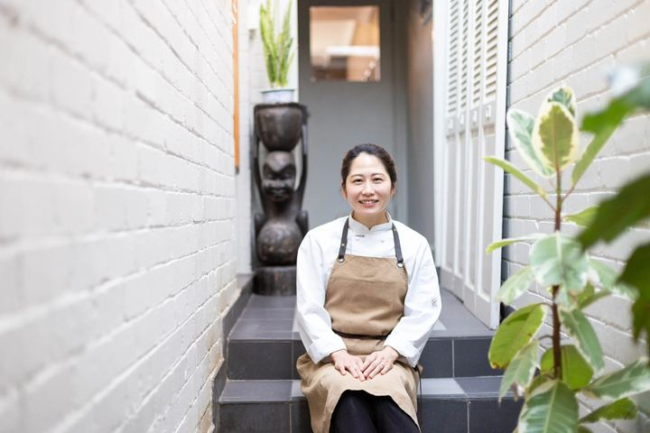

Made to order
Japanese cakes, made one at a time.
We craft our cakes using only pure fresh cream with zero additives, carefully whipped from scratch for that authentic, melt-in-the-mouth lightness.

Menu
Choose a cake and a size.
Size guide: S serves 4 to 6 people, M 6 to 8, L 10 to 12. Tap a size and it goes onto the order slip.
Custom chocolate message plaque: $3
Order
Fill in the order slip.
To order, please contact me on 0417 213 121 or email me at order@makispatisserie.com. This slip writes the email for you.
Delivery and pick-up
Delivery within 20 km of our Auburn kitchen.
At Maki’s Patisserie, every cake is crafted to order with delicate Japanese sponge, fresh dairy cream, and seasonal fruits. To ensure your cake arrives in pristine condition, we operate our own dedicated delivery service across Greater Sydney (up to 20 km from our Auburn kitchen) alongside our standard in-store collection.
1. Delivery schedule
Saturday morning or lunchtime events: because our Saturday delivery run takes place in the afternoon (3:00 PM – 5:30 PM), we strongly recommend scheduling delivery for Friday (10:00 AM – 2:00 PM) if your celebration is earlier on Saturday. Our fresh cream cakes hold their texture and flavour perfectly overnight in standard home refrigeration.
2. Delivery rates and zones
Our delivery fees are flat-rate based on driving distance from our kitchen at 139 Parramatta Rd, Auburn NSW 2144.
3. Important delivery guidelines
4. In-store collection (Auburn)
Collection is always free by appointment from our commercial kitchen address at 139 Parramatta Rd, Auburn NSW 2144. Convenient street parking is readily available along Melton Street South or Station Road just around the corner.
Transport tip for pick-ups: fresh cream cakes must travel on a completely flat, level surface in an air-conditioned vehicle (the front passenger floorboard is best). Never transport a cake on a car seat or on someone’s lap.
FAQ
Questions people ask.
How do I place an order?
What is the cut off time for ordering a cake?
Can I request customisations or dietary modifications?
How long does the cake keep fresh?
How do I safely transport my cake?
Where do I pick up my cake from?
Do you offer cake delivery across Sydney?
Gallery
From the kitchen.
Swipe or scroll sideways to see more.

Contact
139 Parramatta Road, Auburn.
As I make all cakes to order, please try to place your order 3 days in advance. If you have an urgent order, please don’t hesitate to contact me and I will try to accommodate your request.
- Address
- 139 Parramatta Road, Auburn, NSW 2144
Open in Google Maps - Hours